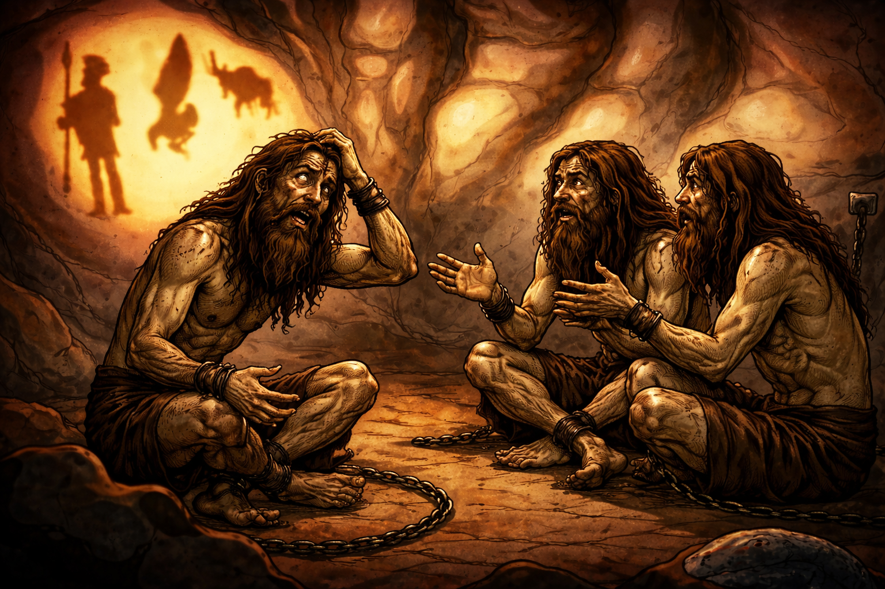

Las personas que te acompañan te explican que han estado ahí por mucho tiempo, tanto así que no recuerdan como llegaron ahí, ni siquiera recuerdan su vida fuera de la cueva. Tambien te explican que las sombras que ven, son proyecciones de objetos que se encuentran detrás de ustedes y que esas sombras son lo único que han conocido. Para ti, todo es confuso, porque no recuerdas nada y todo parece irreal.

Imagen generada a partir de la principal con ChatGPT 5.2 Instant